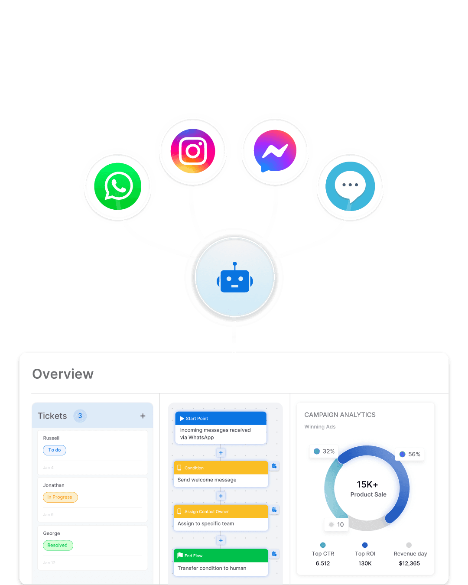
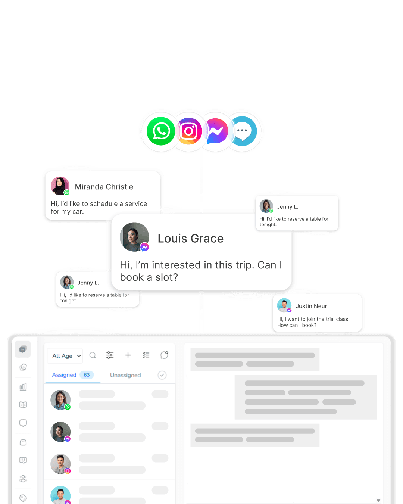

Powerful, customizable workflow logic
Automation adapts to operational complexity with multi-step logic, connected actions, and context-aware workflows.
Orders & business workflows
From complex logic to seamless automation. Explore how AI keeps your business running 24/7.
14-day free trial · No credit card required · Set up in about 10 minutes

Trusted by teams at


Why Automation
Automation adapts to operational complexity with multi-step logic, connected actions, and context-aware workflows.
Workflows can be triggered by schedules, specific events such as chat keywords, or changes in customer data such as a new lead.
Use auto-labeling, ticket creation, admin notifications, and automatic data syncing so work flows smoothly across systems.
How it works
Explore each part of the workflow. The supporting product view updates as you choose a step.
 Cekat Automation01 / 06
Cekat Automation01 / 06
A visual, AI-powered workflow builder that automates business processes without coding, handling triggers and actions across connected systems.
From chat flows and lead follow-ups to ticket creation, team notifications, and cross-system data synchronization, everything can run in connected workflows.
Yes. The drag-and-drop visual logic builder lets teams create automated workflows without technical knowledge.
Cekat Automation
Let automation handle repetitive work so your team can focus on growth and customer experience.